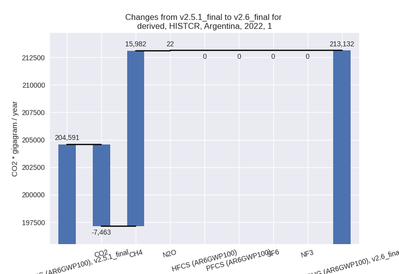

Changes in PRIMAP-hist v2.6_final compared to v2.5.1_final for Argentina
2024-09-24
Johannes Gütschow
Change analysis for Argentina for PRIMAP-hist v2.6_final compared to v2.5.1_final
Overview over emissions by sector and gas
The following figures show the aggregate national total emissions excluding LULUCF AR6GWP100 for the country reported priority scenario. The dotted linesshow the v2.5.1_final data.
The following figures show the aggregate national total emissions excluding LULUCF AR6GWP100 for the third party priority scenario. The dotted linesshow the v2.5.1_final data.
Overview over changes
In the country reported priority scenario we have the following changes for aggregate Kyoto GHG and national total emissions excluding LULUCF (M.0.EL):
- Emissions in 2022 have changed by -0.1%% (-497.07 Gg CO2 / year)
- Emissions in 1990-2022 have changed by 0.2%% (504.19 Gg CO2 / year)
In the third party priority scenario we have the following changes for aggregate Kyoto GHG and national total emissions excluding LULUCF (M.0.EL):
- Emissions in 2022 have changed by 2.4%% (9580.62 Gg CO2 / year)
- Emissions in 1990-2022 have changed by 0.1%% (461.53 Gg CO2 / year)
Most important changes per scenario and time frame
In the country reported priority scenario the following sector-gas combinations have the highest absolute impact on national total KyotoGHG (AR6GWP100) emissions in 2022 (top 5):
- 1: 1.B.2, CH4 with 15780.70 Gg CO2 / year (183.8%)
- 2: M.AG.ELV, N2O with -8546.60 Gg CO2 / year (-20.5%)
- 3: 1.B.2, CO2 with -5284.33 Gg CO2 / year (-74.3%)
- 4: 4, CH4 with 3445.42 Gg CO2 / year (18.6%)
- 5: 1.A, CO2 with -3112.19 Gg CO2 / year (-1.7%)
In the country reported priority scenario the following sector-gas combinations have the highest absolute impact on national total KyotoGHG (AR6GWP100) emissions in 1990-2022 (top 5):
- 1: 1.B.2, CH4 with 13821.46 Gg CO2 / year (178.7%)
- 2: M.AG.ELV, N2O with -6676.78 Gg CO2 / year (-18.3%)
- 3: M.AG.ELV, CH4 with -4834.77 Gg CO2 / year (-80.1%)
- 4: 1.B.2, CO2 with -3958.11 Gg CO2 / year (-81.9%)
- 5: 4, CH4 with 1673.61 Gg CO2 / year (10.9%)
In the third party priority scenario the following sector-gas combinations have the highest absolute impact on national total KyotoGHG (AR6GWP100) emissions in 2022 (top 5):
- 1: 1.A, CO2 with 8167.95 Gg CO2 / year (4.3%)
- 2: 4, CH4 with 1380.36 Gg CO2 / year (9.6%)
- 3: 2, HFCS (AR6GWP100) with 221.43 Gg CO2 / year (1.3%)
- 4: 5, N2O with -202.22 Gg CO2 / year (-13.5%)
- 5: 4, N2O with 8.14 Gg CO2 / year (1.0%)
In the third party priority scenario the following sector-gas combinations have the highest absolute impact on national total KyotoGHG (AR6GWP100) emissions in 1990-2022 (top 5):
- 1: 1.A, CO2 with 209.06 Gg CO2 / year (0.1%)
- 2: 4, CH4 with 127.46 Gg CO2 / year (0.8%)
- 3: 5, N2O with 113.76 Gg CO2 / year (12.7%)
- 4: 2, HFCS (AR6GWP100) with 6.71 Gg CO2 / year (0.1%)
- 5: 4, N2O with 3.55 Gg CO2 / year (0.5%)
Notes on data changes
Here we list notes explaining important emissions changes for the country. ’' means that the following text only applies to the TP time series, while means that it only applies to the CR scenario. Otherwise the note applies to both scenarios.
- In the CR scenario total emissions are almost unchanged for both 2022 and 1990-2022. However, individual sectors have high changes: CH4 from 1.B.2 in BUR5 is roughly 3 times the value from BUR4 used in PRIMAP-hist v2.5.1 both for 2022 and cumulatively, while CO2 is roughly 80% lower.
- On the other hand CH4 and N2O emissions from agriculture excluding livestock (M.AG.ELV) are roughly 20% (N2O) and 80% (CH4) lower in BUR5 than in BUR4.
- Waste CH4 emissions are higher, and energy CO2 is slightly lower.
- In the TP time-series changes in Energy CO2 are due to the updated EI data.
- The removal of FAOSTAT data has changed emissions in sectors 4 and 5. the influence on total emissions is small (TP).
Changes by sector and gas
For each scenario and time frame the changes are displayed for all individual sectors and all individual gases. In the sector plot we use aggregate Kyoto GHGs in AR6GWP100. In the gas plot we usenational total emissions without LULUCF. ## country reported scenario
2022
1990-2022
third party scenario
2022
1990-2022
Detailed changes for the scenarios:
country reported scenario (HISTCR):
Most important changes per time frame
For 2022 the following sector-gas combinations have the highest absolute impact on national total KyotoGHG (AR6GWP100) emissions in 2022 (top 5):
- 1: 1.B.2, CH4 with 15780.70 Gg CO2 / year (183.8%)
- 2: M.AG.ELV, N2O with -8546.60 Gg CO2 / year (-20.5%)
- 3: 1.B.2, CO2 with -5284.33 Gg CO2 / year (-74.3%)
- 4: 4, CH4 with 3445.42 Gg CO2 / year (18.6%)
- 5: 1.A, CO2 with -3112.19 Gg CO2 / year (-1.7%)
For 1990-2022 the following sector-gas combinations have the highest absolute impact on national total KyotoGHG (AR6GWP100) emissions in 1990-2022 (top 5):
- 1: 1.B.2, CH4 with 13821.46 Gg CO2 / year (178.7%)
- 2: M.AG.ELV, N2O with -6676.78 Gg CO2 / year (-18.3%)
- 3: M.AG.ELV, CH4 with -4834.77 Gg CO2 / year (-80.1%)
- 4: 1.B.2, CO2 with -3958.11 Gg CO2 / year (-81.9%)
- 5: 4, CH4 with 1673.61 Gg CO2 / year (10.9%)
Changes in the main sectors for aggregate KyotoGHG (AR6GWP100) are
- 1: Total sectoral emissions in 2022 are 213132.12
Gg CO2 / year which is 57.5% of M.0.EL emissions. 2022 Emissions have
changed by 4.2% (8541.39 Gg CO2 /
year). 1990-2022 Emissions have changed by 6.6% (10248.16 Gg CO2 / year). For 2022
the changes per gas
are:

For 1990-2022 the changes per gas are:
The changes come from the following subsectors:- 1.A: Total sectoral emissions in 2022 are 185652.85 Gg CO2 / year which is 87.1% of category 1 emissions. 2022 Emissions have changed by -1.7% (-3177.74 Gg CO2 / year). 1990-2022 Emissions have changed by -0.6% (-798.89 Gg CO2 / year).
- 1.B.1: Total sectoral emissions in 2022 are 1272.93
Gg CO2 / year which is 0.6% of category 1 emissions. 2022 Emissions have
changed by 2763.5% (1228.48 Gg CO2 /
year). 1990-2022 Emissions have changed by 1153.8% (1189.24 Gg CO2 / year). For 2022
the changes per gas
are:
For 1990-2022 the changes per gas are:
There is no subsector information available in PRIMAP-hist. - 1.B.2: Total sectoral emissions in 2022 are
26206.33 Gg CO2 / year which is 12.3% of category 1 emissions. 2022
Emissions have changed by 66.8%
(10490.65 Gg CO2 / year). 1990-2022 Emissions have changed by 78.4% (9857.81 Gg CO2 / year). For 2022
the changes per gas
are:
For 1990-2022 the changes per gas are:
There is no subsector information available in PRIMAP-hist.
- 2: Total sectoral emissions in 2022 are 23986.72 Gg CO2 / year which is 6.5% of M.0.EL emissions. 2022 Emissions have changed by -1.9% (-453.12 Gg CO2 / year). 1990-2022 Emissions have changed by 1.9% (281.40 Gg CO2 / year).
- M.AG: Total sectoral emissions in 2022 are
108971.07 Gg CO2 / year which is 29.4% of M.0.EL emissions. 2022
Emissions have changed by -9.8%
(-11865.57 Gg CO2 / year). 1990-2022 Emissions have changed by -9.8% (-11815.43 Gg CO2 / year). For 2022
the changes per gas
are:
For 1990-2022 the changes per gas are:
The changes come from the following subsectors:- 3.A: Total sectoral emissions in 2022 are 73193.86 Gg CO2 / year which is 67.2% of category M.AG emissions. 2022 Emissions have changed by -0.8% (-622.84 Gg CO2 / year). 1990-2022 Emissions have changed by -0.4% (-318.19 Gg CO2 / year).
- M.AG.ELV: Total sectoral emissions in 2022 are
35777.21 Gg CO2 / year which is 32.8% of category M.AG emissions. 2022
Emissions have changed by -23.9%
(-11242.73 Gg CO2 / year). 1990-2022 Emissions have changed by -26.6% (-11497.24 Gg CO2 / year). For 2022
the changes per gas
are:
For 1990-2022 the changes per gas are:
There is no subsector information available in PRIMAP-hist.
- 4: Total sectoral emissions in 2022 are 22993.88 Gg
CO2 / year which is 6.2% of M.0.EL emissions. 2022 Emissions have
changed by 17.8% (3482.46 Gg CO2 /
year). 1990-2022 Emissions have changed by 10.5% (1676.30 Gg CO2 / year). For 2022
the changes per gas
are:
For 1990-2022 the changes per gas are:
- 5: Total sectoral emissions in 2022 are 1291.45 Gg
CO2 / year which is 0.3% of M.0.EL emissions. 2022 Emissions have
changed by -13.5% (-202.22 Gg CO2 /
year). 1990-2022 Emissions have changed by 12.7% (113.76 Gg CO2 / year). For 2022 the
changes per gas
are:
For 1990-2022 the changes per gas are:
third party scenario (HISTTP):
Most important changes per time frame
For 2022 the following sector-gas combinations have the highest absolute impact on national total KyotoGHG (AR6GWP100) emissions in 2022 (top 5):
- 1: 1.A, CO2 with 8167.95 Gg CO2 / year (4.3%)
- 2: 4, CH4 with 1380.36 Gg CO2 / year (9.6%)
- 3: 2, HFCS (AR6GWP100) with 221.43 Gg CO2 / year (1.3%)
- 4: 5, N2O with -202.22 Gg CO2 / year (-13.5%)
- 5: 4, N2O with 8.14 Gg CO2 / year (1.0%)
For 1990-2022 the following sector-gas combinations have the highest absolute impact on national total KyotoGHG (AR6GWP100) emissions in 1990-2022 (top 5):
- 1: 1.A, CO2 with 209.06 Gg CO2 / year (0.1%)
- 2: 4, CH4 with 127.46 Gg CO2 / year (0.8%)
- 3: 5, N2O with 113.76 Gg CO2 / year (12.7%)
- 4: 2, HFCS (AR6GWP100) with 6.71 Gg CO2 / year (0.1%)
- 5: 4, N2O with 3.55 Gg CO2 / year (0.5%)
Changes in the main sectors for aggregate KyotoGHG (AR6GWP100) are
- 1: Total sectoral emissions in 2022 are 224616.65
Gg CO2 / year which is 55.1% of M.0.EL emissions. 2022 Emissions have
changed by 3.8% (8167.37 Gg CO2 /
year). 1990-2022 Emissions have changed by 0.1% (208.74 Gg CO2 / year). For 2022 the
changes per gas
are:

The changes come from the following subsectors:- 1.A: Total sectoral emissions in 2022 are 200058.89
Gg CO2 / year which is 89.1% of category 1 emissions. 2022 Emissions
have changed by 4.3% (8167.95 Gg CO2
/ year). 1990-2022 Emissions have changed by 0.1% (209.06 Gg CO2 / year). For 2022 the
changes per gas
are:
There is no subsector information available in PRIMAP-hist. - 1.B.1: Total sectoral emissions in 2022 are 1744.51 Gg CO2 / year which is 0.8% of category 1 emissions. 2022 Emissions have changed by 0.0% (0.00 Gg CO2 / year). 1990-2022 Emissions have changed by 0.0% (0.00 Gg CO2 / year).
- 1.B.2: Total sectoral emissions in 2022 are 22813.25 Gg CO2 / year which is 10.2% of category 1 emissions. 2022 Emissions have changed by -0.0% (-0.58 Gg CO2 / year). 1990-2022 Emissions have changed by -0.0% (-0.32 Gg CO2 / year).
- 1.A: Total sectoral emissions in 2022 are 200058.89
Gg CO2 / year which is 89.1% of category 1 emissions. 2022 Emissions
have changed by 4.3% (8167.95 Gg CO2
/ year). 1990-2022 Emissions have changed by 0.1% (209.06 Gg CO2 / year). For 2022 the
changes per gas
are:
- 2: Total sectoral emissions in 2022 are 26448.00 Gg CO2 / year which is 6.5% of M.0.EL emissions. 2022 Emissions have changed by 0.9% (227.07 Gg CO2 / year). 1990-2022 Emissions have changed by 0.1% (8.02 Gg CO2 / year).
- M.AG: Total sectoral emissions in 2022 are 138383.90 Gg CO2 / year which is 34.0% of M.0.EL emissions. 2022 Emissions have changed by 0.0% (0.00 Gg CO2 / year). 1990-2022 Emissions have changed by 0.0% (0.00 Gg CO2 / year).
- 4: Total sectoral emissions in 2022 are 16702.13 Gg
CO2 / year which is 4.1% of M.0.EL emissions. 2022 Emissions have
changed by 9.1% (1388.41 Gg CO2 /
year). 1990-2022 Emissions have changed by 0.8% (131.01 Gg CO2 / year). For 2022 the
changes per gas
are:
- 5: Total sectoral emissions in 2022 are 1291.45 Gg
CO2 / year which is 0.3% of M.0.EL emissions. 2022 Emissions have
changed by -13.5% (-202.22 Gg CO2 /
year). 1990-2022 Emissions have changed by 12.7% (113.76 Gg CO2 / year). For 2022 the
changes per gas
are:
For 1990-2022 the changes per gas are: